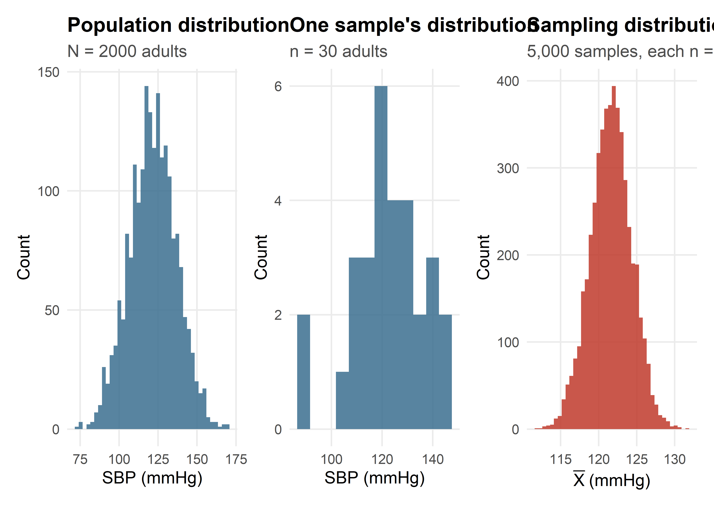
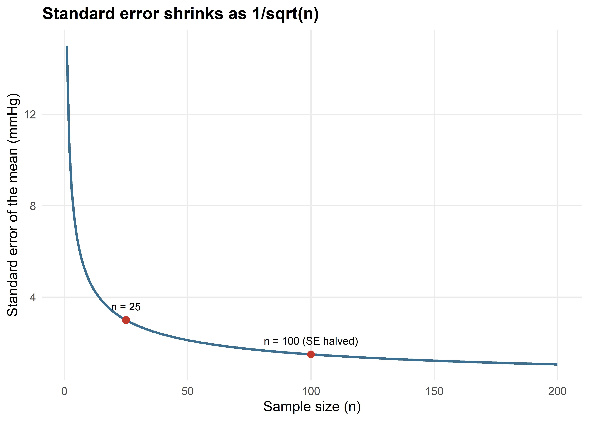
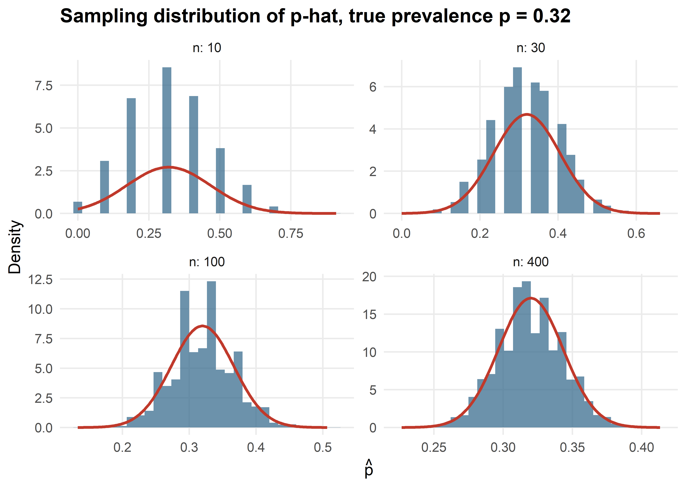
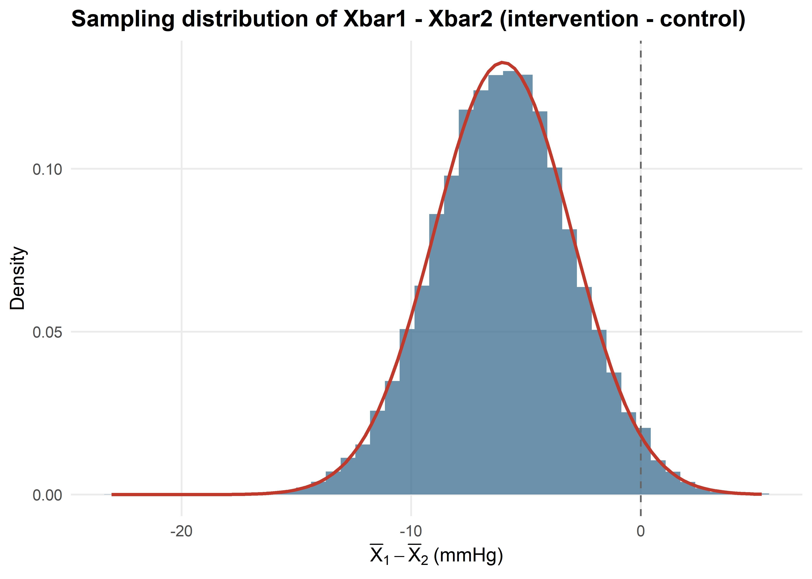
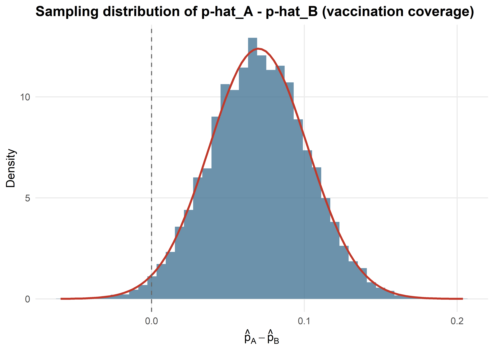
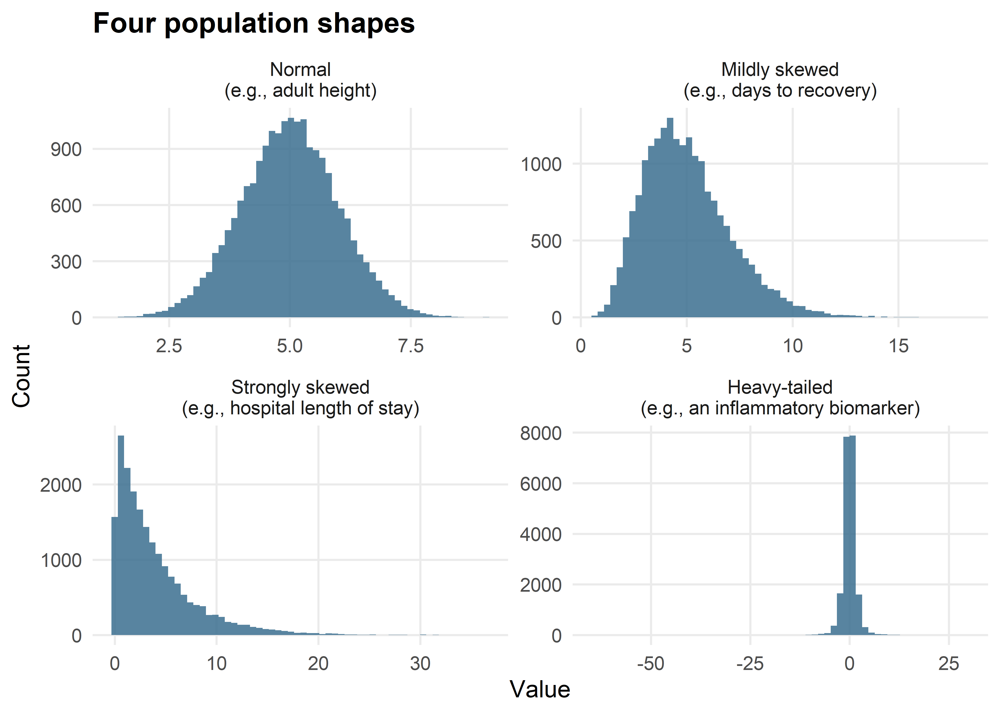
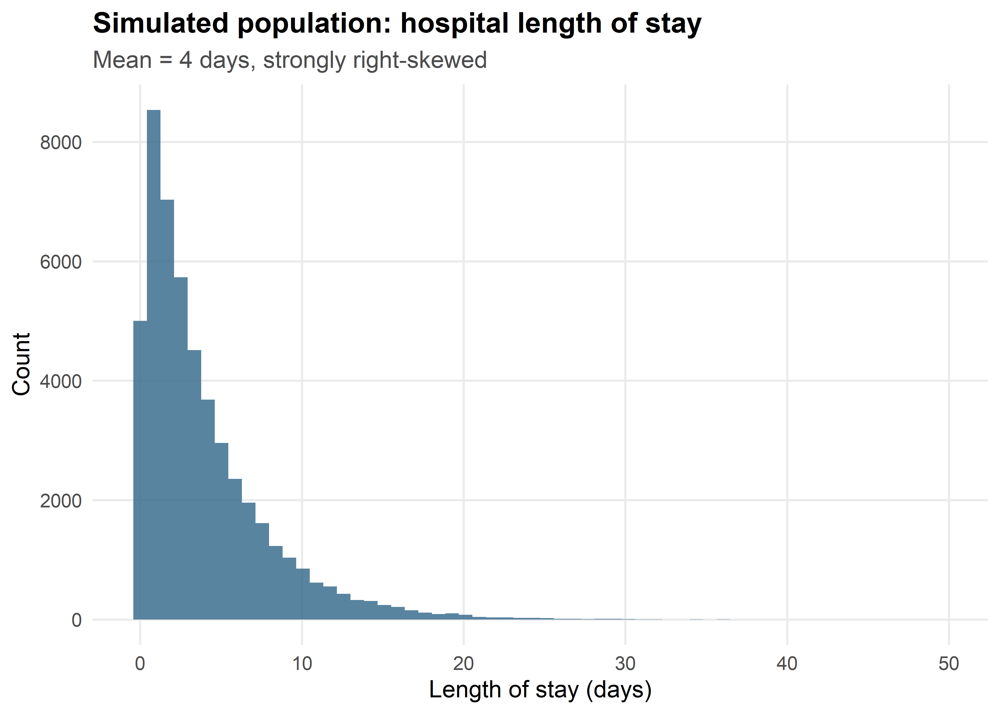
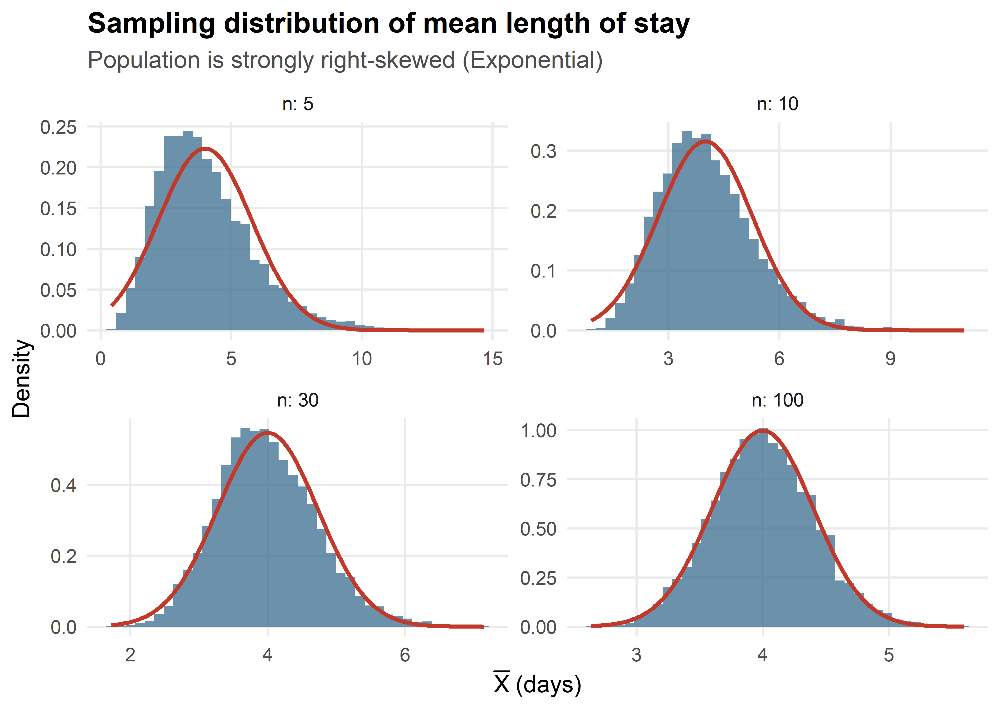
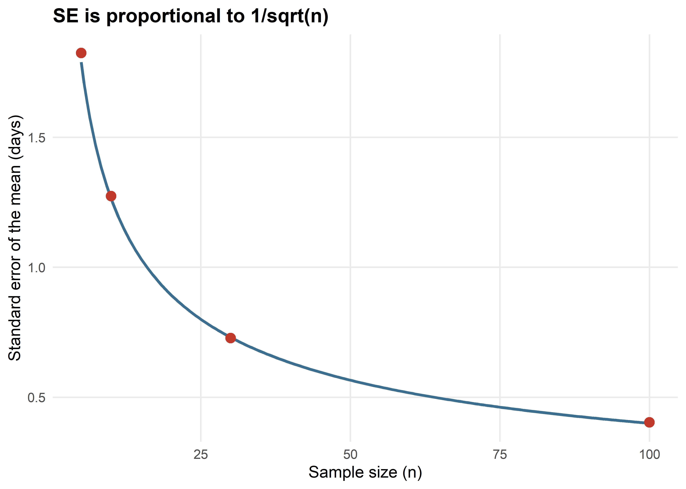
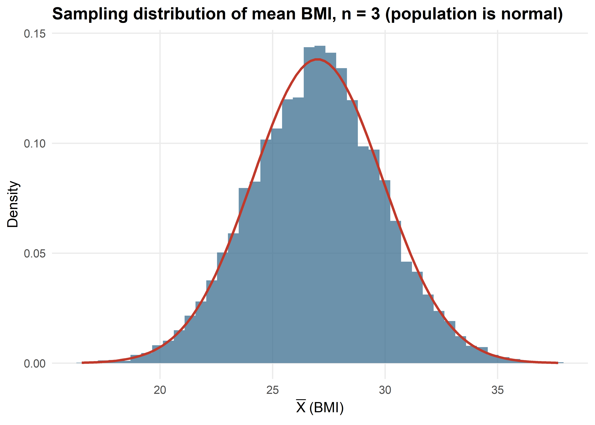

Suppose a public health researcher wants to know the mean systolic blood pressure (SBP) of all adults in a city of 500,000 people. Measuring every adult is not realistic — it would be slow, expensive, and logistically impossible. Instead, the researcher draws a random sample of, say, 100 adults, measures their blood pressure, and calculates a sample mean. That single number becomes the researcher’s best guess at the true, unknown mean SBP for the whole city.
Now suppose a second researcher, working independently, draws a different random sample of 100 adults from the same city and calculates the mean SBP for that sample. Will the two researchers get exactly the same answer? Almost certainly not. One sample might happen to include slightly more older adults, or slightly more people with untreated hypertension, or simply differ by chance in who was measured. The two sample means will typically be close to each other and close to the true population mean, but they will rarely be identical.
This simple observation — that different random samples from the same population produce different estimates — is not a flaw in the research process. It is a fundamental, unavoidable feature of sampling, and understanding it precisely is the foundation of everything that follows in biostatistics: confidence intervals, hypothesis tests, p-values, and margins of error. This chapter develops the ideas needed to describe and quantify that sample-to-sample variability, culminating in one of the most important results in all of statistics: the Central Limit Theorem (CLT).
The central question of this chapter
If I take a random sample and calculate a statistic (like a mean or a proportion), how much would that statistic have differed if I had drawn a different random sample instead — and can I use that knowledge to say something trustworthy about the population I actually care about?
By the end of this chapter, you will be able to answer that question quantitatively, using both mathematical formulas and R simulations, and you will be ready to use these ideas to build confidence intervals and hypothesis tests in the next chapter.
Population Parameter vs. Sample Statistic
Two of the most fundamental concepts in statistics are the population and the sample. A population parameter (e.g., \(\mu\), \(\sigma\), \(\pi\)) is a fixed, usually unknown, numerical characteristic of an entire population. A sample statistic (e.g., \(\bar{x}\), \(s\), \(\hat{p}\)) is computed from sample data and used to estimate the corresponding parameter. Hypothesis testing uses sample statistic, together with its known sampling distribution, to make a probabilistic statement about the population parameter.
Population: The complete set of individuals, items, or events that share a defining characteristic and about which we want to draw conclusions.
Sample: A subset of the population that is actually observed or measured, ideally selected so that it represents the population well.
We use Greek letters for population parameters (fixed but usually unknown quantities) and Roman letterss for sample statistics (computed from data and used to estimate the parameters).
Quantity
Population Parameter
Sample Statistic
Mean
\(\mu\)
\(\bar{x}\)
Variance
\(\sigma^2\)
\(s^2\)
Standard deviation
\(\sigma\)
\(s\)
Proportion
\(\pi\) or \(P\)
\(\hat{p}\)
Size
\(N\)
\(n\)
Summary table for definition of population, sample, parameter, statistic, estimator and estimate along with example are presented below:
Term
Definition
Public health example
Population
The complete set of individuals or units the researcher wants to draw conclusions about
All adults living in a given city; all children under five in a country; all patients treated at a hospital in a given year
Sample
A subset of the population that is actually observed or measured
100 adults randomly selected from the city for blood pressure screening
Parameter
A numerical summary of the population; usually fixed but unknown
The true mean SBP of all adults in the city, \(\mu\); the true proportion with hypertension, \(p\)
Statistic
A numerical summary calculated from a sample; known once the sample is collected
The sample mean SBP from the 100 measured adults, \(\bar X\); the sample proportion with hypertension, \(\hat p\)
Estimator
The general rule or formula used to produce an estimate from any sample (e.g., “average the observations”)
The formula \(\bar X = \frac{1}{n}\sum_{i=1}^n X_i\)
Estimate
The specific numerical value an estimator produces for one particular sample
\(\bar X = 124.3\) mmHg, from this specific sample of 100 adults
Public health example: A researcher wants to know the average hemoglobin level of all pregnant women in a country (the population, size \(N\)). Since testing every pregnant woman is infeasible, a sample of \(n = 500\) pregnant women is selected from antenatal clinics, and the sample mean \(\bar{x}\) is used to estimate the unknown population mean \(\mu\).
Why do we sample instead of studying the whole population?
Feasibility: Populations are often too large (e.g., all adults in a country).
Cost and time: Surveying an entire population is expensive and slow.
Practicality: Some measurements are destructive or invasive (e.g., biopsy), so testing everyone is not possible.
Accuracy: A well-designed sample with careful data collection can sometimes yield more accurate information than a poorly conducted census.
For a sample to give a good estimate of the population, it should ideally be selected using a method that avoids selection bias, such as simple random sampling, stratified sampling, or cluster sampling. The detailed about sampling is explained in the Sampling chapter Sampling.
A useful mnemonic
Parameters go with Populations. Statistics go with Samples. Greek letters (\(\mu\), \(\sigma\), \(p\)) are conventionally used for parameters; Roman letters with accents or hats (\(\bar X\), \(s\), \(\hat p\)) are conventionally used for statistics.
An estimator is the general recipe (a formula, like “add up the observations and divide by \(n\)”), while an estimate is the specific number that recipe produces once applied to actual data. The estimator \(\bar X\) is a random variable before the data are collected; the estimate \(\bar X = 124.3\) is a fixed number once the data are in hand.
Why Statistics Vary from Sample to Sample
The phenomenon of different samples producing different statistics is called sampling variability (or sampling error, though “error” here does not imply a mistake — it simply reflects the play of chance in which individuals happened to be selected). Let’s see this directly with a small simulation.
Imagine a simplified population of 2,000 adults whose true SBP values follow a distribution with a known mean and standard deviation. In real life we would never know these values exactly, but by simulating a population in R, we can act as an all-knowing observer and watch what happens as different samples are drawn from it.
set.seed(101)N_pop <-2000mu_sbp <-122# true population mean SBP (mmHg)sigma_sbp <-15# true population standard deviation (mmHg)sbp_population <-rnorm(N_pop, mean = mu_sbp, sd = sigma_sbp)cat("True population mean SBP :", round(mean(sbp_population), 2), "mmHg\n")
#> True population mean SBP : 121.62 mmHg
cat("True population SD SBP :", round(sd(sbp_population), 2), "mmHg\n")
#> True population SD SBP : 15.01 mmHg
Now let’s draw five different random samples of size \(n = 30\) from this population and compare their sample means, standard deviations, and the proportion of each sample with SBP above 130 mmHg (a common threshold used to flag elevated blood pressure):
Notice that no two samples give exactly the same mean, standard deviation, or proportion — even though every sample was drawn randomly from the same population using the same sample size. This is sampling variability in action. It is not caused by measurement error or poor study design; it is caused simply by which 30 people happened to be selected each time.
Sampling variability is not a mistake
Sampling variability does not mean anything went wrong with the study. It is an inherent property of drawing a finite sample from a larger population. The goal of biostatistics is not to eliminate this variability — that is impossible — but to measure and account for it using the tools developed in this chapter.
What Is a Sampling Distribution?
If sample statistics vary from sample to sample, a natural next question is: how much do they vary, and in what pattern? To answer this, imagine repeating the sampling process not five times, but thousands of times, and recording the sample mean every single time. The resulting collection of sample means has its own distribution — a distribution not of individual measurements, but of the statistic itself.
Definition: Sampling distribution
The sampling distribution of a statistic is the probability distribution of that statistic across all possible random samples of a given size, drawn from the same population.
This definition is often confused with two other, very different concepts. Students commonly mix up the following three distributions, so it is worth pausing to distinguish them clearly:
Distribution
What it describes
How many observations does it summarize?
Population distribution
The distribution of the variable (e.g., SBP) across every individual in the population
All \(N\) individuals in the population (usually unknown to the researcher)
Sample distribution
The distribution of the variable across the individuals in one particular sample
The \(n\) individuals in that one sample
Sampling distribution
The distribution of a statistic (e.g., the sample mean) across all possible samples of size \(n\)
Conceptually, infinitely many samples, each of size \(n\)
This is the single most common point of confusion in this chapter
The sample distribution describes individual data points within one sample (e.g., a histogram of the 30 SBP values in Sample 1 above). The sampling distribution describes a statistic (e.g., the sample mean) across many different samples. These are not the same object, they are not even the same kind of object, and they generally do not look alike — the sampling distribution is almost always much less spread out than either the population or a single sample.
Let’s make this concrete with a three-panel figure: the population distribution, one single sample’s distribution, and the sampling distribution of the mean built from thousands of repeated samples.
p_pop <-ggplot(data.frame(x = sbp_population), aes(x)) +geom_histogram(bins =40, fill ="#3B6E8F", alpha =0.85) +labs(title ="Population distribution", subtitle =paste0("N = ", N_pop, " adults"), x ="SBP (mmHg)", y ="Count")p_one_sample <-ggplot(data.frame(x = one_sample), aes(x)) +geom_histogram(bins =12, fill ="#3B6E8F", alpha =0.85) +labs(title ="One sample's distribution", subtitle =paste0("n = ", n_demo, " adults"), x ="SBP (mmHg)", y ="Count")p_sampling_dist <-ggplot(data.frame(x = many_sample_means), aes(x)) +geom_histogram(bins =40, fill ="#C0392B", alpha =0.85) +labs(title ="Sampling distribution of X-bar", subtitle ="5,000 samples, each n = 30", x =expression(bar(X)~"(mmHg)"), y ="Count")p_pop + p_one_sample + p_sampling_dist

Figure 13.1: Three different distributions that are easy to confuse: the population distribution (left), one sample’s distribution (middle), and the sampling distribution of the mean built from 5,000 repeated samples of n = 30 (right).
Notice the three panels are all on the same numeric scale (SBP in mmHg), yet they look strikingly different. The population distribution and the single-sample distribution both span a wide range of individual values, roughly \(122 \pm 3 \times 15\) mmHg. The sampling distribution of \(\bar X\), by contrast, is tightly clustered around 122 — because averaging 30 measurements together smooths out the individual-level variability. This narrowing is precisely what the rest of this chapter quantifies.
Sampling Distribution of the Sample Mean
Let \(X_1, X_2, \dots, X_n\) represent \(n\) independently and randomly sampled observations from a population with mean \(\mu\) and standard deviation \(\sigma\). The sample mean is
\[
\bar X = \frac{1}{n}\sum_{i=1}^n X_i.
\]
Because \(\bar X\) is a function of random data, it is itself a random variable, and it has a sampling distribution with its own mean, variance, and standard deviation.
This says that, on average, across all possible samples, the sample mean equals the population mean. We describe this by saying \(\bar X\) is an unbiased estimator of \(\mu\): it does not systematically overestimate or underestimate the true value, even though any individual sample mean will typically be a little off.
Variance and standard deviation of the sampling distribution
Assuming the \(X_i\) are independent (a standard assumption under random sampling),
This particular quantity — the standard deviation of a statistic’s sampling distribution — is so important in inference that it gets its own name and its own section, immediately below.
\(\mu\) is the true population mean — a fixed, usually unknown parameter.
\(\sigma\) is the true population standard deviation — how spread out individual observations are.
\(n\) is the sample size — how many individuals are averaged together.
\(E(\bar X) = \mu\) says the sample mean is centered exactly on the true population mean, with no systematic bias.
\(SE(\bar X) = \sigma/\sqrt n\) says the spread of the sampling distribution shrinks as \(n\) grows, at a rate governed by the square root of \(n\) — a relationship explored in depth in the next section.
We can confirm both results numerically with a simulation:
These two terms sound similar and are frequently confused, but they describe fundamentally different kinds of variability.
Standard deviation (\(\sigma\) or \(s\))
Standard error (\(SE\))
Describes variability among
individual observations in the population or a sample
a statistic (like \(\bar X\)) across repeated samples
Answers the question
“How spread out are people’s individual measurements?”
“How much would my sample statistic change if I repeated the study?”
Depends on sample size?
No — it is (approximately) a property of the population
Yes — it shrinks as \(n\) increases
Example
The SBP values of individual adults vary with SD \(\approx 15\) mmHg
A sample mean SBP based on \(n=30\) people varies, from study to study, with SE \(\approx 2.7\) mmHg
Common confusion
“Standard deviation” describes the spread of raw data. “Standard error” describes the spread of a statistic’s sampling distribution. They are related — the standard error of the mean is literally the population standard deviation divided by \(\sqrt n\) — but they answer different questions and are not interchangeable.
Why the standard error shrinks with sample size
From the previous section,
\[
SE(\bar X) = \frac{\sigma}{\sqrt n}.
\]
Averaging more observations together cancels out more of the individual-level noise. A single measurement is noisy; the average of 100 measurements is much less noisy, because the random ups and downs of individual observations tend to offset one another. But the relationship is governed by \(\sqrt n\), not \(n\) itself, which has an important practical consequence worked out below.
Worked demonstration: quadrupling the sample size halves the standard error
n1 <-25n2 <-100se_n25 <- sigma_sbp /sqrt(n1)se_n100 <- sigma_sbp /sqrt(n2)cat("SE with n = 25 :", round(se_n25, 3), "mmHg\n")
#> SE with n = 25 : 3 mmHg
cat("SE with n = 100:", round(se_n100, 3), "mmHg\n")
Increasing the sample size from 25 to 100 — a fourfold increase in data collection effort — exactly halves the standard error. This is the \(\sqrt n\) law: to cut the standard error in half, you need four times as much data; to cut it to a third, you need nine times as much data. Precision improves with more data, but with diminishing returns — each additional participant buys progressively less improvement in precision than the one before.
se_df <-data.frame(n =1:200) |>mutate(SE = sigma_sbp /sqrt(n))ggplot(se_df, aes(n, SE)) +geom_line(color ="#3B6E8F", linewidth =1) +geom_point(data =data.frame(n =c(25, 100), SE =c(se_n25, se_n100)), color ="#C0392B", size =2.5) +annotate("text", x =25, y = se_n25 +0.6, label ="n = 25", size =3.2) +annotate("text", x =100, y = se_n100 +0.6, label ="n = 100 (SE halved)", size =3.2) +labs(title ="Standard error shrinks as 1/sqrt(n)", x ="Sample size (n)", y ="Standard error of the mean (mmHg)")

Figure 13.2: Standard error of the mean SBP as a function of sample size, illustrating diminishing returns.
Sampling Distribution of a Sample Proportion
Many public health outcomes are binary rather than continuous: a person either has hypertension or does not, is vaccinated or is not, survives or does not. For a binary outcome with true population proportion \(p\), the natural statistic from a sample of size \(n\) is the sample proportion,
\[
\hat p = \frac{X}{n},
\]
where \(X\) is the number of “successes” (e.g., number of people with hypertension) observed in the sample. Because each individual observation is either 0 or 1, \(\hat p\) is really just the sample mean of a string of 0/1 values — so all of the reasoning from the previous two sections applies directly.
\(p\) is the true population proportion — a fixed, usually unknown parameter.
\(p(1-p)\) plays the role that \(\sigma^2\) played for the mean; it is the variance of a single binary (Bernoulli) observation.
As with the mean, the standard error shrinks as \(n\) grows, again at the \(1/\sqrt n\) rate.
Conditions for a normal approximation
The sampling distribution of \(\hat p\) is approximately normal when the sample size is large enough relative to how far \(p\) is from 0.5. A widely used rule of thumb is
This condition ensures there is enough “room” on both sides of \(p\) for the distribution to take a roughly symmetric, bell-like shape, rather than being squeezed up against 0 or 1.
Worked example — hypertension prevalence. Suppose the true prevalence of hypertension among adults in a region is \(p = 0.32\), and a study samples \(n = 200\) adults.
p_hyp <-0.32n_hyp <-200np <- n_hyp * p_hypn1p <- n_hyp * (1- p_hyp)se_phat <-sqrt(p_hyp * (1- p_hyp) / n_hyp)cat("np =", np, " n(1-p) =", n1p, " (both well above 10, so the normal approximation is appropriate)\n")
#> np = 64 n(1-p) = 136 (both well above 10, so the normal approximation is appropriate)
cat("SE(p-hat) =", round(se_phat, 4), "\n")
#> SE(p-hat) = 0.033
We can also see the normal approximation build up as \(n\) grows, exactly as we did for the mean:
set.seed(505)ns_prop <-c(10, 30, 100, 400)prop_results <-map_dfr(ns_prop, function(n) {data.frame(n = n, phat =rbinom(8000, size = n, prob = p_hyp) / n)})prop_normals <-map_dfr(ns_prop, function(n) { x_seq <-seq(max(0, p_hyp -4*sqrt(p_hyp * (1- p_hyp) / n)),min(1, p_hyp +4*sqrt(p_hyp * (1- p_hyp) / n)), length.out =200)data.frame(n = n, x = x_seq, dens =dnorm(x_seq, mean = p_hyp, sd =sqrt(p_hyp * (1- p_hyp) / n)))})ggplot(prop_results, aes(phat)) +geom_histogram(aes(y =after_stat(density)), bins =30, fill ="#3B6E8F", alpha =0.75) +geom_line(data = prop_normals, aes(x, dens), color ="#C0392B", linewidth =1) +facet_wrap(~n, scales ="free", labeller = label_both) +labs(title ="Sampling distribution of p-hat, true prevalence p = 0.32", x =expression(hat(p)), y ="Density")

Figure 13.3: Sampling distribution of the sample proportion p-hat (true p = 0.32) at increasing sample sizes, with the normal approximation overlaid.
At \(n = 10\), \(np = 3.2\), well below the rule-of-thumb threshold of 10 — and the histogram is visibly blocky and asymmetric. By \(n = 400\), the fit to the normal curve is excellent.
Sampling Distribution of the Difference Between Two Means
Public health research frequently compares two groups: a treatment group vs. a control group, one region vs. another, or exposed vs. unexposed individuals. If independent random samples are drawn from two populations — sample 1 of size \(n_1\) from a population with mean \(\mu_1\) and standard deviation \(\sigma_1\), and sample 2 of size \(n_2\) from a population with mean \(\mu_2\) and standard deviation \(\sigma_2\) — the statistic of interest is the difference in sample means, \(\bar X_1 - \bar X_2\).
Expected value and standard error
Because \(\bar X_1\) and \(\bar X_2\) are independent, their variances add (even though we are subtracting the means):
Worked example — comparing mean SBP between two groups. Suppose a study compares mean SBP between adults following a low-sodium diet intervention (group 1) and a usual-diet control group (group 2), with \(\mu_1 = 118\), \(\sigma_1 = 14\), \(n_1 = 50\), and \(\mu_2 = 124\), \(\sigma_2 = 16\), \(n_2 = 50\).
set.seed(606)diff_sim <-replicate(20000, mean(rnorm(n1_bp, mu1, sigma1)) -mean(rnorm(n2_bp, mu2, sigma2)))ggplot(data.frame(diff_sim), aes(diff_sim)) +geom_histogram(aes(y =after_stat(density)), bins =45, fill ="#3B6E8F", alpha =0.75) +stat_function(fun = dnorm, args =list(mean = diff_mean, sd = se_diff_means), color ="#C0392B", linewidth =1) +geom_vline(xintercept =0, linetype ="dashed", color ="grey40") +labs(title ="Sampling distribution of Xbar1 - Xbar2 (intervention - control)",x =expression(bar(X)[1] -bar(X)[2]~"(mmHg)"), y ="Density")

Figure 13.4: Simulated sampling distribution of the difference in mean SBP between the intervention and control groups, with the theoretical normal density overlaid.
The dashed line at 0 marks “no true difference between the groups.” Because almost the entire distribution lies to the left of 0, an observed difference near or above 0 would be a fairly unusual outcome if the intervention truly lowers SBP by 6 mmHg — a pattern of reasoning that becomes the basis for two-sample hypothesis tests in the next chapter.
Sampling Distribution of the Difference Between Two Proportions
The same logic extends naturally to comparing two proportions, such as vaccination coverage in two different populations.
Worked example — comparing vaccination coverage. Suppose measles vaccination coverage is \(p_1 = 0.85\) among \(n_1 = 300\) children sampled in Region A, and \(p_2 = 0.78\) among \(n_2 = 280\) children sampled in Region B.
set.seed(707)diff_prop_sim <-replicate(20000, (rbinom(1, n1_vax, p1_vax) / n1_vax) - (rbinom(1, n2_vax, p2_vax) / n2_vax))ggplot(data.frame(diff_prop_sim), aes(diff_prop_sim)) +geom_histogram(aes(y =after_stat(density)), bins =45, fill ="#3B6E8F", alpha =0.75) +stat_function(fun = dnorm, args =list(mean = diff_prop, sd = se_diff_props), color ="#C0392B", linewidth =1) +geom_vline(xintercept =0, linetype ="dashed", color ="grey40") +labs(title ="Sampling distribution of p-hat_A - p-hat_B (vaccination coverage)",x =expression(hat(p)[A] -hat(p)[B]), y ="Density")

Figure 13.5: Simulated sampling distribution of the difference in vaccination coverage between Region A and Region B, with the theoretical normal density overlaid.
Most of the distribution’s mass sits above 0, consistent with the true underlying difference of 7 percentage points in favor of Region A.
Central Limit Theorem
The conceptual idea, before the mathematics
Every sampling distribution we have built so far — for the mean, the proportion, the difference of means, the difference of proportions — has looked approximately bell-shaped once the sample size was large enough. This is not a coincidence specific to these particular examples. It is a consequence of one of the most powerful results in all of statistics.
The Central Limit Theorem, in plain language
When you average (or sum) a large number of independent, random observations, the distribution of that average becomes approximately normal — even if the individual observations themselves are not normally distributed at all.
This is remarkable. It means we do not need to know, or even care very much about, the exact shape of the population distribution — whether SBP is symmetric, hospital length of stay is right-skewed, or a lab value has a strange bimodal shape. As long as we are averaging a sufficiently large sample, the sampling distribution of the mean settles into a predictable, well-understood normal shape.
The formal statement
Central Limit Theorem (formal statement)
Let \(X_1, X_2, \dots, X_n\) be independent, identically distributed random variables with population mean \(\mu\) and finite population standard deviation \(\sigma\). Then, as \(n\) becomes large,
\[
\bar X \; \overset{\cdot}{\sim} \; N\!\left(\mu, \; \frac{\sigma^2}{n}\right),
\]
or, in standardized form,
\[
Z = \frac{\bar X - \mu}{\sigma/\sqrt n} \; \overset{\cdot}{\sim} \; N(0, 1).
\]
Reading the standardized formula term by term:
\(\bar X\) is the sample mean calculated from the data.
\(\mu\) is the true population mean.
\(\sigma/\sqrt n\) is the standard error of the mean, exactly as derived earlier in this chapter.
Subtracting \(\mu\) and dividing by \(\sigma/\sqrt n\) converts \(\bar X\) into a \(Z\)-score: the number of standard errors \(\bar X\) falls above or below the true mean.
The theorem says this \(Z\)-score behaves, approximately, like a draw from the standard normal distribution — a distribution with mean 0 and standard deviation 1, for which probabilities are easy to compute using standard tables or R’s pnorm()/qnorm() functions.
What the theorem says — and what it does not say
It is easy to over-simplify the CLT into a slogan like “with \(n \geq 30\), everything is normal.” This is not quite right, and biostatisticians should be precise about the theorem’s actual content.
What the CLT does NOT say
It does not say the population becomes normal. The population distribution never changes — it stays whatever shape it always was.
It does not say any individual observation becomes more likely to be “typical.” A single new patient’s SBP is just as variable as before.
It does not guarantee normality at any fixed sample size for every population. How large \(n\) needs to be depends on the population’s shape.
It does not apply automatically to non-independent data, such as repeated measurements on the same patients or clustered data from the same clinic, without modification.
What the CLT DOES say
The sampling distribution of the mean (not the population, not a single sample) approaches a normal shape as \(n\) increases.
This approach to normality happens for a very wide range of population shapes, as long as the population has a finite variance.
The rate of convergence — how quickly the sampling distribution starts looking normal — depends on how far the population distribution is from being symmetric and light-tailed.
Why sample size matters, and why there is no universal cutoff
The commonly cited rule “\(n \geq 30\)” is a rough, historically convenient guideline, not a mathematical law. For a population that is already close to symmetric and bell-shaped, the sampling distribution of the mean can look approximately normal at very small sample sizes — sometimes \(n = 5\) or even smaller. For a population that is heavily skewed or has extreme outliers, \(n = 30\) may still be far too small for the normal approximation to be trustworthy. Section 11 and the simulation in Section 12 demonstrate this directly.
The role of independence
The derivations of \(E(\bar X)\) and \(SE(\bar X)\) earlier in this chapter relied on the observations \(X_1, \dots, X_n\) being independent. If observations are correlated — for example, repeated blood pressure measurements on the same patient, or patients clustered within the same clinic who share unmeasured characteristics — the effective amount of independent information is smaller than the raw sample size suggests, and the standard formulas understate the true standard error. Specialized methods (such as mixed models or cluster-robust standard errors, covered in later chapters) are needed in these situations.
The effect of skewness and extreme observations
Skewness slows convergence to normality because it takes more averaging to smooth out a lopsided population shape. Extreme observations (heavy tails) slow convergence even further, because a single very large or very small value can noticeably shift a sample mean, especially at small \(n\). Both effects are demonstrated concretely in the next two sections.
Central Limit Theorem and Different Population Shapes
Not all populations are equally “easy” for the CLT to work on. Consider four conceptually different population shapes that arise routinely in public health data:
Normally distributed: e.g., many physiological measurements like height, when restricted to a relatively homogeneous adult group.
Mildly skewed: e.g., number of days to recovery from a mild illness, where most people recover quickly but a few take somewhat longer.
Strongly skewed: e.g., hospital length of stay, where most stays are short but a long right tail of complicated cases pulls the distribution far to the right.
Heavy-tailed: e.g., certain inflammatory biomarkers (such as C-reactive protein), where the majority of values are unremarkable but occasional extreme values occur.
set.seed(808)shapes_df <-bind_rows(data.frame(shape ="Normal\n(e.g., adult height)", x =rnorm(20000, mean =5, sd =1)),data.frame(shape ="Mildly skewed\n(e.g., days to recovery)", x =rgamma(20000, shape =6, rate =1.2)),data.frame(shape ="Strongly skewed\n(e.g., hospital length of stay)", x =rexp(20000, rate =0.25)),data.frame(shape ="Heavy-tailed\n(e.g., an inflammatory biomarker)", x =rt(20000, df =3))) |>mutate(shape =factor(shape, levels =c("Normal\n(e.g., adult height)", "Mildly skewed\n(e.g., days to recovery)","Strongly skewed\n(e.g., hospital length of stay)", "Heavy-tailed\n(e.g., an inflammatory biomarker)" )))ggplot(shapes_df, aes(x)) +geom_histogram(bins =60, fill ="#3B6E8F", alpha =0.85) +facet_wrap(~shape, scales ="free") +labs(title ="Four population shapes", x ="Value", y ="Count")

Figure 13.6: Four population shapes with different implications for how quickly the Central Limit Theorem ‘kicks in.’
The normal and mildly skewed populations require relatively few observations before their sample means look bell-shaped. The strongly skewed population (Section 12 demonstrates this one in detail) needs a considerably larger \(n\). The heavy-tailed population is the most demanding case: because extreme values occur often enough to matter, the sampling distribution of the mean can retain heavier-than-normal tails even at moderately large \(n\), and in the most extreme cases (distributions with infinite variance), the CLT does not apply in its standard form at all.
Practical takeaway
Before assuming a sample mean is normally distributed, think about the shape of the population the data came from, not just the sample size. A skewed or heavy-tailed outcome (e.g., cost data, length of stay, or certain lab values) generally needs a larger \(n\) than a well-behaved outcome like height or blood pressure.
Simulation Demonstration in R
To see the Central Limit Theorem at work, we now build a strongly non-normal population and watch its sampling distribution of the mean transform as \(n\) increases. We use hospital length of stay (in days) as our example — a classic right-skewed public-health variable, modeled here with an exponential distribution with mean 4 days.
set.seed(909)mu_los <-4rate_los <-1/ mu_lossigma_los <-4# for Exponential(rate), SD = mean = 1/ratelos_population <-rexp(50000, rate = rate_los)ggplot(data.frame(x = los_population), aes(x)) +geom_histogram(bins =60, fill ="#3B6E8F", alpha =0.85) +labs(title ="Simulated population: hospital length of stay", subtitle =paste0("Mean = ", mu_los, " days, strongly right-skewed"),x ="Length of stay (days)", y ="Count")

Figure 13.7: Population distribution of a strongly non-normal variable: simulated hospital length of stay (days), Exponential with mean 4 days.
Next, for each of four sample sizes — \(n = 5, 10, 30, 100\) — we draw 8,000 independent random samples, compute the sample mean of each one, and examine the resulting sampling distribution.
set.seed(1010)ns_clt <-c(5, 10, 30, 100)clt_results <-map_dfr(ns_clt, function(n) {data.frame(n = n, xbar =simulate_stat(function(n) rexp(n, rate = rate_los), n, mean, n_sim =8000))})clt_normals <-map_dfr(ns_clt, function(n) { x_seq <-seq(min(clt_results$xbar[clt_results$n == n]), max(clt_results$xbar[clt_results$n == n]), length.out =200)data.frame(n = n, x = x_seq, dens =dnorm(x_seq, mean = mu_los, sd = sigma_los /sqrt(n)))})
ggplot(clt_results, aes(xbar)) +geom_histogram(aes(y =after_stat(density)), bins =40, fill ="#3B6E8F", alpha =0.75) +geom_line(data = clt_normals, aes(x, dens), color ="#C0392B", linewidth =1) +facet_wrap(~n, scales ="free", labeller = label_both) +labs(title ="Sampling distribution of mean length of stay", subtitle ="Population is strongly right-skewed (Exponential)",x =expression(bar(X)~"(days)"), y ="Density")

Figure 13.8: The Central Limit Theorem in action: sampling distribution of the mean length of stay, for increasing sample size. The red curve is the matching normal density predicted by the CLT.
What changes as\(n\) increases?
At \(n = 5\), the sampling distribution is still clearly right-skewed — a visible fingerprint of the exponential population it came from. The normal curve is a poor match.
At \(n = 10\), the skew is less pronounced but still noticeable, especially in the longer right tail.
At \(n = 30\), the distribution looks considerably more symmetric and bell-shaped, though careful inspection still shows a slight rightward lean.
At \(n = 100\), the fit to the normal curve is excellent — the histogram and the red theoretical density line up closely.
This progression illustrates exactly the point made in Section 10: the commonly cited “\(n \geq 30\)” guideline is a reasonable rule of thumb for moderately skewed data, but for a strongly skewed variable like length of stay, even \(n = 30\) retains some visible non-normality, and analysts should be cautious about assuming normality too early.
Demonstrating the Effect of Sample Size
We already derived that \(SE(\bar X) = \sigma/\sqrt n\); here we confirm this proportionality directly from the simulation above, and connect it to the visual narrowing seen in Figure 13.8.
se_table <- clt_results |>group_by(n) |>summarise(empirical_SE =sd(xbar), .groups ="drop") |>mutate(theoretical_SE = sigma_los /sqrt(n),ratio_to_sqrt_n = empirical_SE *sqrt(n) # should be roughly constant (~ sigma) across rows )se_table
se_curve <-data.frame(n =seq(5, 100, length.out =200)) |>mutate(SE = sigma_los /sqrt(n))ggplot() +geom_line(data = se_curve, aes(n, SE), color ="#3B6E8F", linewidth =1) +geom_point(data = se_table, aes(n, empirical_SE), color ="#C0392B", size =3) +labs(title ="SE is proportional to 1/sqrt(n)", x ="Sample size (n)", y ="Standard error of the mean (days)")

Figure 13.9: Empirical standard error of the mean length of stay (points) matches the theoretical sigma/sqrt(n) curve (line) closely across all four sample sizes.
The ratio_to_sqrt_n column above — the empirical SE multiplied by \(\sqrt n\) — stays roughly constant across all four sample sizes, close to the true population SD of 4 days. This is direct numerical confirmation that \(SE \propto 1/\sqrt n\): as \(n\) increases, precision improves, but only in proportion to the square root of the additional data collected, not the data itself. Doubling \(n\) improves precision by a factor of about \(\sqrt 2 \approx 1.41\), not a factor of 2 — the diminishing-returns pattern introduced in Section 6.
Sampling Distribution of the Mean When the Population Is Normal
The Central Limit Theorem is a large-sample result: it describes what happens as \(n\) grows. But there is a separate, exact result that holds for any sample size, no matter how small, provided the population itself is normally distributed.
Exact result for a normal population
If \(X_1, \dots, X_n\) are independently drawn from a \(N(\mu, \sigma^2)\) population, then
\[
\bar X \; \sim \; N\!\left(\mu, \; \frac{\sigma^2}{n}\right)
\]
exactly, for every sample size \(n \geq 1\) — not just approximately, and not just for large \(n\).
This is an important distinction. The CLT is a statement about convergence as \(n \to \infty\), valid for essentially any population shape. The normal-population result above is a statement about exactness at any\(n\), but it only holds when the population is already normal. We can see this directly by simulating from a normal population at a very small sample size, where the CLT alone would not (yet) guarantee normality, but the exact normal-population result does.
set.seed(1111)mu_bmi <-27; sigma_bmi <-5n_small <-3xbars_small_n <-simulate_stat(function(n) rnorm(n, mu_bmi, sigma_bmi), n_small, mean, n_sim =10000)ggplot(data.frame(xbars_small_n), aes(xbars_small_n)) +geom_histogram(aes(y =after_stat(density)), bins =45, fill ="#3B6E8F", alpha =0.75) +stat_function(fun = dnorm, args =list(mean = mu_bmi, sd = sigma_bmi /sqrt(n_small)), color ="#C0392B", linewidth =1) +labs(title ="Sampling distribution of mean BMI, n = 3 (population is normal)", x =expression(bar(X)~"(BMI)"), y ="Density")

Figure 13.10: Even at a very small sample size (n = 3), the sampling distribution of the mean is essentially normal — because the population itself (BMI, here) is normal, this is an exact result, not an approximation.
Even with only 3 observations per sample, the sampling distribution already matches the normal curve closely — something that would not happen at \(n = 3\) if the underlying population (like length of stay in the previous section) were strongly skewed.
When the Central Limit Theorem Works
Putting the pieces together, several practical conditions determine whether the CLT-based normal approximation can be trusted in a real analysis:
Random sampling. The sample must be drawn using a probability-based sampling method that gives the population a known chance of being represented. Convenience samples or samples with systematic selection biases can violate the assumptions underlying every formula in this chapter, no matter how large \(n\) is.
Independence. Observations should not be systematically correlated with one another. Repeated measures on the same individual, or clustering within families, clinics, or communities, reduce the effective sample size and require adjusted methods.
Appropriate sample size relative to population shape. As shown in Sections 11–12, the more skewed or heavy-tailed the population, the larger \(n\) needs to be before the normal approximation is trustworthy.
Finite variance. The CLT (in its standard form) requires the population to have a finite variance. Some extremely heavy-tailed distributions do not, and the CLT does not apply to them in the usual way.
Consideration of population shape, not blind reliance on a sample-size rule of thumb — inspect the data, and when possible, simulate as we did above.
The finite population correction (introductory level)
All of the standard error formulas in this chapter assume sampling with replacement from an effectively infinite (or very large) population — a reasonable assumption when the population is much larger than the sample. But if we sample without replacement from a relatively small, finite population of size \(N\), and the sample size \(n\) is a non-trivial fraction of \(N\) (a common rule of thumb is \(n/N > 0.05\)), the standard error should be adjusted downward using the finite population correction (FPC):
The correction factor \(\sqrt{(N-n)/(N-1)}\) is less than 1 whenever \(n < N\), reflecting the intuitive idea that sampling a larger fraction of a finite population gives you more information (and hence a smaller standard error) than the usual formula — which implicitly assumes an infinitely large population — would suggest.
Worked example. A clinic has \(N = 500\) registered patients. A quality-improvement audit samples \(n = 50\) patient records without replacement to estimate a mean outcome with population SD \(\sigma = 20\).
cat("Finite population correction factor :", round(fpc, 3), "\n")
#> Finite population correction factor : 0.95
cat("SE with finite population correction :", round(se_with_fpc, 3), "\n")
#> SE with finite population correction : 2.686
Because \(n/N = 50/500 = 0.10\), which exceeds the common 5% guideline, ignoring the finite population correction here would slightly overstate the true standard error.
Common Misconceptions
Misconception 1: “The CLT says the population becomes normal.”
Correction: The population distribution never changes. The CLT describes the sampling distribution of the mean (or another statistic), not the population itself. Individual observations remain exactly as skewed, discrete, or unusual as they always were.
Misconception 2: “A sample size of 30 always guarantees normality.”
Correction:\(n \geq 30\) is a rough guideline that works reasonably well for mildly skewed populations, but as Section 12 demonstrated, a strongly skewed population (like hospital length of stay) can still show visible non-normality at \(n = 30\). There is no universal cutoff; the required \(n\) depends on the population’s shape.
Misconception 3: “Standard deviation and standard error are the same.”
Correction: Standard deviation describes variability among individual observations. Standard error describes variability of a statistic (like \(\bar X\)) across repeated samples. They are related by \(SE(\bar X) = \sigma/\sqrt n\), but they are not the same quantity, and confusing them leads to incorrect confidence intervals and hypothesis tests.
Misconception 4: “A larger sample eliminates all bias.”
Correction: A larger sample reduces sampling variability (a smaller standard error), but it does nothing to fix bias — systematic errors from a poorly designed sample, non-random selection, measurement error, or confounding. A huge biased sample can be far less trustworthy than a small, well-designed random sample.
Misconception 5: “The sampling distribution is the same as the sample distribution.”
Correction: As emphasized in Section 4, the sample distribution describes the individual values within one sample. The sampling distribution describes a statistic across many hypothetical samples. They are different objects with different shapes and different purposes.
Misconception 6: “The CLT only applies to normally distributed populations.”
Correction: This is backward. The CLT is most useful precisely because it applies to non-normal populations. If the population were already normal, we would not need the CLT at all — the exact result from Section 14 would apply directly, at any sample size.
Connection to Statistical Inference
Everything in this chapter exists to support the machinery of statistical inference covered in the chapters that follow. The sampling distribution of a statistic is the theoretical foundation for each of the following tools:
Standard errors quantify the spread of a sampling distribution and appear in every confidence interval and test statistic formula in this book.
Confidence intervals are built by taking a sample statistic and adding and subtracting a multiple of its standard error: \(\text{statistic} \pm z^{*} \times SE\). The CLT is what justifies using a normal-based critical value \(z^*\) for this calculation in large samples.
Hypothesis tests compare an observed statistic to what would be expected under a null hypothesis, using the statistic’s sampling distribution (under that null hypothesis) to judge how surprising the observed result is.
Test statistics, such as a \(Z\)-statistic \(Z = (\bar X - \mu_0)/SE\), are standardized versions of a statistic, expressed in units of standard error, whose sampling distribution under the null hypothesis is known (approximately normal, thanks to the CLT).
\(p\)-values are tail-area probabilities computed from the sampling distribution of the test statistic under the null hypothesis — literally, the probability of observing a result at least as extreme as the one obtained, if the null hypothesis were true.
Margins of error are simply \(z^{*} \times SE\), the “plus-or-minus” quantity attached to a point estimate to form a confidence interval.
Looking ahead
The next chapter, Estimation and Confidence Intervals, builds directly on the material in this chapter. Every confidence interval formula introduced there is a direct application of a sampling distribution derived here: the CLT tells us the sampling distribution is approximately normal, the standard error formulas tell us exactly how wide that distribution is, and the two combine to produce an interval estimate with a known, quantifiable level of confidence.
Public Health Applications
The concepts in this chapter apply directly to a wide range of public health measures. A few representative examples:
Mean blood pressure. Estimating average SBP or DBP in a population, and comparing means across demographic groups or intervention arms, relies on the sampling distribution of \(\bar X\) and \(\bar X_1 - \bar X_2\).
Mean BMI. Tracking average body mass index in a community over time, or comparing BMI across regions, uses the same machinery.
Mean cholesterol. Estimating average LDL or total cholesterol levels, often from a skewed underlying distribution, benefits directly from understanding how the CLT behaves under skewness (Sections 11–12).
Prevalence of hypertension. Estimating the proportion of a population with a condition uses the sampling distribution of \(\hat p\) from Section 7.
Vaccination coverage. Estimating and comparing the proportion vaccinated across regions or time periods, as in the worked example in Section 9.
Difference in disease prevalence between groups. Comparing prevalence of a condition (e.g., diabetes) between two demographic groups uses the sampling distribution of \(\hat p_1 - \hat p_2\).
Difference in mean health outcomes. Comparing mean outcomes (e.g., birth weight, recovery time, or a biomarker level) between an exposed and an unexposed group uses the sampling distribution of \(\bar X_1 - \bar X_2\).
In every one of these applications, the underlying question is the same: given the variability we would expect just from sampling, how much should we trust the specific number our one study happened to produce?
Worked Examples
Worked Example 1: Standard error of mean SBP
Problem. A study measures SBP in a random sample of 49 adults. The population standard deviation of SBP is known from prior research to be \(\sigma = 14\) mmHg. What is the standard error of the sample mean?
Given information.\(\sigma = 14\) mmHg, \(n = 49\).
Interpretation. If this study were repeated many times, each time drawing a new random sample of 49 adults, the sample mean SBP would typically vary by about 2 mmHg from one repetition of the study to the next, purely due to sampling variability.
Worked Example 2: Effect of increasing sample size
Problem. Using the same population as Worked Example 1 (\(\sigma = 14\) mmHg), how does the standard error change if the sample size increases from 49 to 196?
Interpretation. Quadrupling the sample size (49 \(\to\) 196) exactly halves the standard error (2.00 \(\to\) 1.00 mmHg). This illustrates the \(\sqrt n\) relationship: to further halve the standard error again would require quadrupling the sample size once more, to 784.
Worked Example 3: Sample proportion and normal-approximation conditions
Problem. In a sample of 150 adults, 42 are found to have hypertension. Estimate the sample proportion and its standard error, and check whether a normal approximation is appropriate.
Given information.\(X = 42\), \(n = 150\).
Formula.\(\hat p = X/n\), \(SE(\hat p) = \sqrt{\hat p(1-\hat p)/n}\), with condition \(np \geq 10\) and \(n(1-p) \geq 10\).
#> phat SE np n1p
#> 0.28000000 0.03666061 42.00000000 108.00000000
Interpretation. The estimated hypertension prevalence in this sample is 28.0%, with a standard error of about 3.7 percentage points. Because both \(np \approx 42\) and \(n(1-p) \approx 108\) comfortably exceed 10, the normal approximation to the sampling distribution of \(\hat p\) is appropriate here.
Worked Example 4: Difference between two means
Problem. A study compares mean cholesterol between two clinics: Clinic A (\(\bar X_1 = 205\) mg/dL, \(\sigma_1 = 38\), \(n_1 = 60\)) and Clinic B (\(\bar X_2 = 196\) mg/dL, \(\sigma_2 = 34\), \(n_2 = 55\)). Estimate the standard error of the difference in means.
Interpretation. The observed difference in sample means is \(205 - 196 = 9\) mg/dL, and this difference has a standard error of about 6.9 mg/dL. Because the standard error is fairly large relative to the observed difference, this single study alone provides only modest evidence of a true difference between clinics — a judgment that will be formalized with a confidence interval or hypothesis test in the next chapter.
Worked Example 5: Probability calculation using the CLT
Problem. Suppose true mean SBP in a population is \(\mu = 122\) mmHg with \(\sigma = 15\) mmHg. In a random sample of \(n = 40\) adults, what is the probability that the sample mean SBP exceeds 126 mmHg, purely due to sampling variability?
#> SE z probability
#> 2.37170825 1.68654809 0.04584514
Interpretation. There is roughly a 4.6% chance that a random sample of 40 adults would produce a sample mean SBP above 126 mmHg, purely by chance, if the true population mean is really 122 mmHg. If a study actually observed a sample mean this high or higher, it would be a moderately unusual (though not extremely rare) outcome under the assumption that \(\mu = 122\) — the same logic used later to compute \(p\)-values.
Key Takeaways
A parameter describes a population and is fixed but usually unknown; a statistic describes a sample and varies from sample to sample.
Sampling variability is the natural, unavoidable tendency for a statistic to differ across different random samples from the same population.
A sampling distribution is the distribution of a statistic across all possible samples of a given size — a fundamentally different object from the population distribution or a single sample’s distribution.
\(E(\bar X) = \mu\): the sample mean is an unbiased estimator of the population mean.
\(SE(\bar X) = \sigma/\sqrt n\): the standard error of the mean shrinks as sample size grows, but only at the rate of \(\sqrt n\), producing diminishing returns.
Standard deviation measures variability among individual observations; standard error measures variability of a statistic across repeated samples — these are related but distinct concepts.
The sampling distribution of a proportion behaves analogously: \(E(\hat p) = p\), \(SE(\hat p) = \sqrt{p(1-p)/n}\), with a normal approximation appropriate when \(np \geq 10\) and \(n(1-p) \geq 10\).
The sampling distributions of \(\bar X_1 - \bar X_2\) and \(\hat p_1 - \hat p_2\) extend the same logic to two-group comparisons common in public health research.
The Central Limit Theorem guarantees that the sampling distribution of the mean becomes approximately normal as \(n\) grows large, regardless of the population’s shape — but how large “large” needs to be depends on that shape, and there is no single universal cutoff.
If the population itself is normal, the sampling distribution of \(\bar X\) is exactly normal at any sample size — a distinct, stronger result than the CLT.
Sampling distributions are the theoretical foundation for standard errors, confidence intervals, hypothesis tests, test statistics, \(p\)-values, and margins of error — the tools developed in the next chapter.
Key Terms
Term
Meaning
Sampling variability
The natural tendency for a statistic to take different values across different random samples from the same population.
Sampling distribution
The probability distribution of a statistic across all possible random samples of a given size from a population.
Statistic
A numerical summary calculated from a sample (e.g., \(\bar X\), \(\hat p\)); a random variable before the data are observed.
Parameter
A numerical summary of a population (e.g., \(\mu\), \(p\)); a fixed, usually unknown constant.
Standard error
The standard deviation of a statistic’s sampling distribution; quantifies how much the statistic would vary across repeated samples.
Central Limit Theorem
The result that the sampling distribution of the mean (or another sum/average-based statistic) approaches a normal distribution as sample size increases, regardless of the population’s shape (given finite variance).
Sampling distribution of the mean
The distribution of \(\bar X\) across repeated samples of size \(n\); centered at \(\mu\) with standard deviation \(\sigma/\sqrt n\).
Sampling distribution of a proportion
The distribution of \(\hat p\) across repeated samples of size \(n\); centered at \(p\) with standard deviation \(\sqrt{p(1-p)/n}\).
Normal approximation
The practice of treating a statistic’s sampling distribution as approximately normal, justified by the CLT (for means/proportions in large samples) or exactly, for any \(n\), when the underlying population is itself normal.
Practice Questions
Explain, in your own words, the difference between a population and a sample. Give a public health example of each.
A researcher calculates the mean hemoglobin level from a sample of 80 pregnant women. Is this value a parameter or a statistic? Explain your reasoning.
Why do two different random samples of the same size, drawn from the same population, typically produce different sample means?
Define “sampling distribution” in your own words, and explain how it differs from the distribution of a single sample.
A population of adult patients has a mean fasting glucose of \(\mu = 95\) mg/dL and standard deviation \(\sigma = 12\) mg/dL. Calculate the standard error of the mean for a sample of size \(n = 36\).
Using the same population as Question 5, calculate the standard error for a sample of size \(n = 144\). By what factor did the standard error change, and why?
Explain, using appropriate statistical language, the difference between “standard deviation” and “standard error.” Why is this distinction important when interpreting a research report?
A survey of 250 adults finds that 60 report currently smoking. Calculate the sample proportion and its standard error. Check whether the conditions for a normal approximation are satisfied.
State the Central Limit Theorem in your own words, being careful to specify exactly what becomes approximately normal.
A colleague claims: “Since our sample size is 35, which is bigger than 30, we can assume the sampling distribution of the mean is normal, no matter what the data look like.” Critique this statement using ideas from this chapter.
Explain why a strongly skewed population (such as hospital length of stay) generally requires a larger sample size than a symmetric population before the sampling distribution of the mean becomes approximately normal.
Suppose a population is known to be exactly normally distributed. Explain how the sampling distribution of the mean for \(n = 4\) differs from what the Central Limit Theorem alone would guarantee for such a small sample size.
A clinic has 400 patients on its registry. A researcher samples 80 patient charts without replacement to estimate mean length of stay, with a known population SD of 3.5 days. Calculate the standard error both with and without the finite population correction, and explain why they differ.
Two independent samples are drawn to compare mean birth weight between infants born to mothers who smoked during pregnancy (\(\bar X_1\)) and mothers who did not smoke (\(\bar X_2\)). Write the formula for the standard error of \(\bar X_1 - \bar X_2\), and explain, in words, what each term in the formula represents.
R-based exercise. Using R, simulate 5,000 random samples of size \(n = 15\) from a population you define yourself (e.g., rpois(), rgamma(), or runif()). Plot the sampling distribution of the sample mean and describe, in a sentence or two, how closely it resembles a normal distribution.
R Practice
The exercises below are meant to be completed interactively in R. They reuse the simulate_stat() helper function defined at the top of this chapter, which draws n_sim random samples of size n from a population generator rpop and returns the resulting values of a chosen statistic.
# Reminder: the helper function used throughout this chaptersimulate_stat <-function(rpop, n, stat_fun = mean, n_sim =10000) {replicate(n_sim, stat_fun(rpop(n)))}
Exercise A. Modify the length-of-stay simulation from Section 12 to use a population with a larger mean length of stay (for example, rexp(n, rate = 1/8), representing a mean of 8 days instead of 4). Does the sampling distribution still converge to normal by \(n = 100\)? Does it converge more slowly or more quickly than the original example? Explain why, based on the shape of the population.
Exercise B. Replace the exponential population in Section 12 with a Poisson population (e.g., rpois(n, lambda = 2), representing a rare-event count such as number of ER visits in a year). Simulate sampling distributions for \(n = 5, 20, 50\) and comment on how the discreteness of the Poisson distribution affects the sampling distribution at small \(n\).
Exercise C. Using set.seed(2024), simulate the sampling distribution of a sample proportion when the true proportion is \(p = 0.04\) (a rare outcome, such as a rare adverse drug reaction) and \(n = 60\). Check the \(np \geq 10\) condition. Does the simulated sampling distribution look normal? What does this tell you about using the normal approximation for rare events with modest sample sizes?
Exercise D. Write R code to verify the finite population correction from Section 15. Simulate a finite population of \(N = 300\) values (for example, rnorm(300, mean = 50, sd = 10)), then repeatedly draw samples of size \(n = 60\)without replacement (using sample(..., replace = FALSE)), and compare the empirical standard error of the sample mean to both the uncorrected formula (\(\sigma/\sqrt n\)) and the finite-population-corrected formula. Which one matches the simulation more closely?
Exercise E. Using the two-group blood pressure example from Section 8, write R code to simulate the sampling distribution of \(\bar X_1 - \bar X_2\) under the assumption that there is actually no true difference between the groups (i.e., set \(\mu_1 = \mu_2\)). Use your simulation to estimate the probability of observing a difference in sample means at least as large in magnitude as \(6\) mmHg, purely by chance.